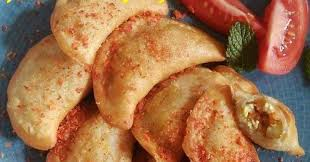

| Jalakotek adalah salah satu makanan khas majalengka yang populer di kalangan masyarakat.Jalakotek yaitu yang terbuat dari campuran tepung terigu dan aci yang di goreng, menjadi primadona di Majalengka.Kelebihan jalakotek terletak pada rasa gurih dan renyahnya,menjadikannya camilan favorit. Meskipun bentuknya mirip pastel, isiannya berbeda, terdiri dari aci dan tahu. Jalakotek sering di jadikan oleh-ole khas bagi para wisatawan yang berkunjung di Majalengka. |  |